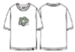
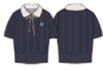
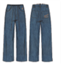
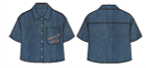

REORDER PERFORMANCE
리오더 성과
TOP STYLE SALES
| # | STYLE | ITEM | SALES | REC. | 전주/이후 |
|---|---|---|---|---|---|
| 1 | WA2602ST78 | 우먼스 릴리 아플리케 세미크롭 반팔티셔츠 | 33.9백만 | 44.8% | 156장/주 → 150장/주 |
| 2 | WA2602SO75 | 우먼스 아플리케 데님 버뮤다팬츠 | 25.0백만 | 24.5% | 60장/주 → 89장/주 |
| 3 | WA2602KT64 | 우먼스 리본 카라 반팔 니트 | 16.8백만 | 13.8% | 67장/주 → 103장/주 |
| 4 | WA2602PT71 | 우먼스 와이드핏 저온스 데님팬츠 | 11.6백만 | 19.5% | 90장/주 → 91장/주 |
| 5 | WA2602ST03 | 빅릴리 반팔티셔츠 | 9.9백만 | 13.4% | 203장/주 → 127장/주 |
| 6 | WA2602SS71 | 우먼스 저온스 데님 반팔 셔츠 | 8.7백만 | 9.7% | 58장/주 → 73장/주 |
| 7 | WA2602ST12 | 8컷 그래픽 반팔티셔츠 | 8.3백만 | 7.4% | 51장/주 → 100장/주 |
| 8 | WA2602STW1 | 우먼스 레이어드 버튼 반팔티셔츠 | 7.7백만 | 16.1% | 11장/주 → 18장/주 |
CAD VIEW





